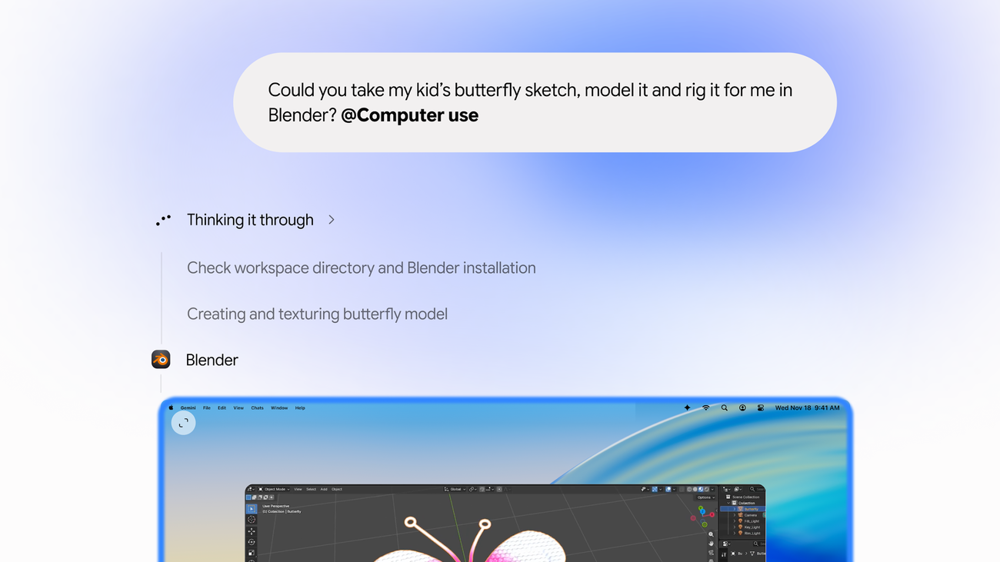
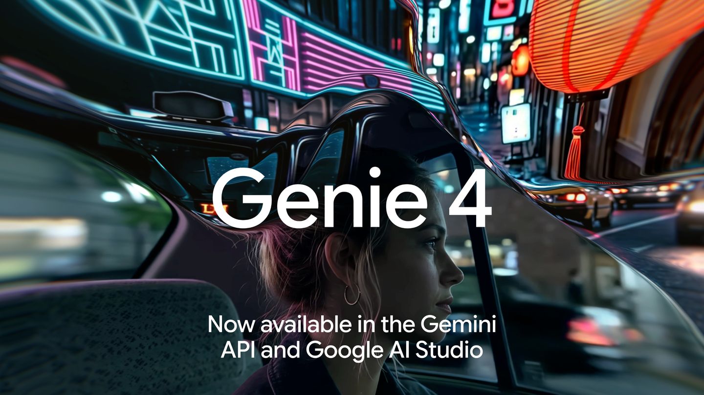
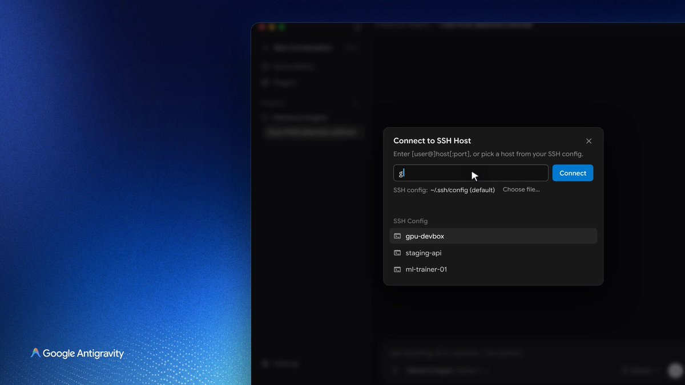

AI Intelligence Daily · 2026-11-20（周五）
统计窗口：2026-11-19 08:00 → 2026-11-20 08:00（上海 / Asia/Shanghai）· 事实与判断分区 · 国内/国际双轨 · 承接 Daily 11-19；11-19 白天快讯仅 21:00 PUSH（Kimi Code Desktop 1.4.0 / CLI 2.7.0），09:04 / 11:02 / 12:56 / 14:56 / 17:00 / 18:54 / 23:01 均为 SILENT，最近扫描覆盖至约 15:01Z。本报补全 15:01Z 之后的隔夜切片，并吸收日间 near-miss。· 已在售 Desktop/CLI（不计首次邀测）：主窗重大工作面 **Kimi Code Desktop 1.4.0**（配对 CLI **2.7.0**，快讯 21:00 已推）· 补收 **Antigravity App 原生 SSH**（官方 changelog 日期 11-17，@antigravity 11-19 18:00:00Z 发帖）· 点版本：Factory CLI+Desktop **1.15.0** · 讯飞 WinWork **V1.1.27** · MiniMax CLI **0.7.8**（Desktop 仍 3.1.16）· Antigravity CLI **1.5.13**（窗内先发 1.5.12）· Claude Code latest **2.1.329**（窗内先晋升 2.1.328）· dsh latest 升为 **0.2.2-rc.5**（仍为 RC）。持平或仅旁支：Codex latest 仍 **0.170.0**（alpha 见 0.172.0-alpha.2 / 0.171.0-alpha.13.1）· Copilot CLI latest 仍 **1.0.114**（prerelease 已至 1.0.115-1）· Qwen Code latest 仍 0.28.0 · CodeBuddy latest 仍 2.185.0 · 千问办公仍 2.1.0 · Qoder changelog 仍 0.5.14 · OpenCode 2.x 仍 v2.3.2（1.x 仍 v1.19.6）· VS Code 稳定版仍 1.147.0 · MCP servers 仍 v2.5.0 · ZCode 官方 changelog 仍 3.18.2（CDN 3.19.0 仅 Mac/Linux 可见，Windows 仍 404，不写成已发船）· 小艺 Work 仍 0.7.7 · StepCode 仍 0.1.7。★（约 08:18 CST，相对 Daily 11-19 约 08:16 CST，约 24 小时）：deepseek-harness **284,202**（+594）· agent-desktop **25,542**（+247）· agent-browser **52,883**（+232）· opencode **228,045**（+215）· open-code-review **54,382**（+214）· chat-demo **5,023**（+206）· chrome-devtools-mcp **58,362**（+153）· dsh-superagent-prototype **23,953**（+132）· codex-security **14,193**（+82）· DeepInfer **26,236**（+33）· servers **92,114**（+25）· code-verification **288**（+6）
今日一句话判断
今天真正把行业位置从「即将上市」变成「已经在交易」的，是 Anthropic 完成了 ANT 的首个交易日：纳斯达克官方新闻室写明开盘价 111.50 美元，CNBC 直播稿写明收盘价 97.17 美元，较发行价 83 美元约高 17%；而真正改写 Agent 工程默认假设的，是 Google 把 Tool Retrieval 放进 Gemini Interactions API——工具参数 schema 可以按需加载，并且能直接作用在远程 MCP 服务器上——同时把 computer use 做到 Gemini Mac 应用里，让任务在隔离窗口中点击、输入、跨应用执行。 同一窗里，Kimi Code Desktop 1.4.0 把 Claude Code、Codex、Cursor 的会话接到同一桌面里交接，OpenAI 则把已在 ChatGPT 里用过的 GPT-Live-1.1 开放给 API，并单独给待机分钟计价。不要把媒体的万亿美元市值写成官方数字：官方新闻稿和纳斯达克新闻室都没有给出第一方总市值或总股本。
专栏一｜新闻
本栏结构：
- 国际头条：Anthropic ANT 完成首日交易（UPDATE 270；开盘 111.50 美元为纳斯达克官方数字，收盘 97.17 美元引自 CNBC）
- 国际头条：Gemini API 发布 Tool Retrieval（预览，Interactions API；可延迟加载工具 schema，并支持远程 MCP）
- 国际中栏：Gemini 应用 Mac 端 computer use 向美国英语 Plus / Pro / Ultra 用户滚动开放
- 国内中栏：Kimi Code Desktop 1.4.0 / CLI 2.7.0（快讯 21:00 已推；可交接 Claude Code / Codex / Cursor 会话）
- 国际中栏：GPT-Live-1.1 进入 API，并推出 Standby 分钟价
- 国际中栏：Genie 4 进入 Gemini API（UPDATE 277）
- 补收：Antigravity 桌面应用原生 SSH（changelog 日期 11-17）
- 短讯：Factory 1.15.0、Copilot 再扩 8 个 GitHub-verified 连接器、点版本与 Health 扩面
排序依据：重要度 → 与两条主线的相关性 → 时效。IPO 改变的是 Anthropic 作为上市公司的位置；Tool Retrieval 和 Mac computer use 直接碰到工具协议与工作面；Kimi 的会话交接则是国内 Desktop 对跨 Harness 协作的一次明确产品化。
1. Anthropic（ANT）完成首个交易日：官方开盘 111.50 美元，CNBC 记录收盘 97.17 美元
S · UPDATE · 国际 · I/J · 隔夜 · watchlist **270** · 非产品发船
发生时间：纳斯达克常规开盘为 09:30 ET（22:30 CST）；此前快讯 23:01 仍只核到开盘铃仪式、未核到成交价。纳斯达克新闻室稿标注 Nov 19, 2026 3:30PM EST（11-20 04:30 CST），写明已开始交易并给出开盘价。收盘发生在 16:00 ET（11-20 05:00 CST，窗内）。CNBC 直播稿页面更新至 7:04 PM EST（08:04 CST），紧挨本报出站，用来核对收盘数字，事件本身仍落在统计窗内。发行预计于 11-20 交割，本报出站时美东仍为 11-19 晚间，交割尚未到期。
发生了什么
纳斯达克官方新闻室写明：Anthropic（ANT）于周四开始在纳斯达克交易，开盘价为 每股 111.50 美元；Dario Amodei 与 Daniela Amodei 在纳斯达克 MarketSite 参加了开盘铃仪式，新闻室并记录了收盘铃仪式。这是对 Daily 11-19 已报事实的实质进展：发行价 83.00 美元、代码 ANT、预计 11-19 开谈，当时交易尚未开始。
关于收盘，纳斯达克这篇新闻室稿本身没有写出收盘价。CNBC 直播稿写明：ANT 开盘 111.50 美元，收于 97.17 美元，较发行价 83 美元上涨约 17%；并称当日成交量超过 8.46 亿 股。按发行价计算的涨幅（97.17 / 83 − 1）约为 17.1%，与「约 17%」一致。CNBC 还把整次发行 980,000,000 股 × 83 美元约等于 813 亿美元，写成公司「募资」口径；这一点仍须沿用昨日区分：其中公司出售 956,351,354 股，售股股东出售 23,648,646 股，公司不会从售股股东部分获得所得。官方新闻稿和纳斯达克新闻室都没有给出总股本或官方市值。CNBC 另有「完全稀释口径约 1.8 万亿美元」的计算，也有其他媒体使用不同口径的万亿数字，本报不把其中任何一项升格为已核对的官方市值。
Anthropic 官网 /news 与官方 X 在本窗未见针对开盘或收盘的新新闻稿。交割日仍以 11-18 定价稿中的 2026-11-20 为准，须满足惯例交割条件。
我的判断
判断：这是窗口内对行业格局最硬的资本事件落地，但不是新的模型、协议或产品发船。重要的是价格路径已经被公开市场写下来了：开盘显著高于 83 美元，收盘仍高于发行价，但低于开盘。它结束了「还在定价、还没开谈」的阶段，把 Anthropic 放进上市公司的披露、股东构成和每日定价里。不要把首日收盘解读成 Claude 技术路线或 API 价格发生了变化——官方当天没有新的产品声明。也不要把媒体市值当成已经可引用的官方数字。
未来影响
短期，市场会看 11-20 是否如期交割、超额配售是否行使，以及随后几日 ANT 是否站在发行价之上。中期，定期披露会提高安全事件、大客户集中度、算力采购和治理安排的可见度。对模型竞赛本身，上市交易不增加新能力；它改变的是谁在为什么样的时间表承担责任，以及今后如何阅读 Anthropic 的公开声明。
对智能体互联网
无新的互操作协议或身份标准。若随后的定期披露开始更完整地讨论连接器、代理权限或安全事件，那会变成可跟踪的治理信号，而不是今天的事实。
对 Work / Agent 引擎
无直接 Harness 发船。启示仍是：Claude 产品线今后的默认模型、速率限制与企业条款，会更多暴露在财报与风险披露里。采购和路线对照时，要把产品声明和上市公司披露分开看。
值得进一步做什么
- 盯 11-20 交割是否如期完成，以及超额配售是否行使。
- 继续以招股说明书和交易所/公司公告为准，不把媒体市值写入内部假设。
- 暂不必因为首日涨跌去改引擎设计。
配图
见图 1（CNBC 直播报道使用的现场照片，来源页 Anthropic IPO live updates；纳斯达克新闻室另有开盘/收盘铃仪式记录，但该页未写出收盘价）。
真实来源
- https://www.nasdaq.com/newsroom/anthropic-marks-ipo-at-nasdaq
- https://www.cnbc.com/2026/11/19/anthropic-ipo-ant-live-updates.html
- https://www.anthropic.com/news/anthropic-prices-initial-public-offering
2. Gemini API 发布 Tool Retrieval：工具 schema 可按需加载，并直接支持远程 MCP
A · NEW · 国际 · E/B/C · 隔夜 · watchlist **279**
发生时间：官方博客标注 Nov 19, 2026；blog.google RSS pubDate 2026-11-19T18:00:00Z（11-20 02:00:00 CST）。主文：Introducing Tool Retrieval in the Gemini API。
发生了什么
Google 宣布在 Gemini Interactions API 中以预览形式推出 Tool Retrieval。官方的问题定义很具体：当 Agent 连接到几十甚至上百个工具时，每次请求都发送完整参数 schema 会推高输入 token、增加延迟，并在候选变多时降低选工具的准确性。打开后，开发者在请求里加入 tool_search，并对希望暂不展开的工具设置 defer_loading: true。模型仍然能看到每个被延迟工具的名称和描述，但参数 schema 先不进上下文；需要某个工具时，模型在同一次请求内按名称检索，API 再加载完整 schema 并完成函数调用。这三步会出现在 interaction.steps 里，便于调试。
官方写明：不必自建或托管索引，搜索由服务端完成；最常用的工具可以保持预加载，长尾再延迟。它与前缀缓存兼容——被延迟的 schema 不进入提示词开头，随后加载的 schema 加在对话后面，缓存前缀可以跨轮保持稳定。Tool Retrieval 也适用于 Gemini API 中的远程 MCP 服务器：对 mcp_server 工具设置 defer_loading: true 后，该服务器暴露的全部工具都按需加载，而不必逐一列出。若开发者已有自己的工具注册表、嵌入索引或按用户权限过滤，可以把 tool_search 设为 "execution": "client"，由应用执行检索，并允许在对话中途暴露新工具。
定价上，官方写明 没有单独收费，按所用模型的标准输入/输出计费；启用 tool_search 会增加一小块固定输入 token，被实际加载的 schema 在此后的对话里按输入计费。支持范围为 Gemini 3.6 及更新模型，包括所有 Gemini 4 模型，且仅在 Interactions API 中提供。示例调用使用的是 gemini-4-hydrogen。
我的判断
判断：这是当天与用户两条主线最直接相关的工程发船。它把「工具太多、不能全部塞进上下文」从各家 Harness 自己做的检索层，提升成模型 API 的一等能力，并且把远程 MCP 服务器当成一种可延迟展开的工具源。短期看，这是 Interactions API 的预览能力，不是新的跨厂协议标准；长期看，它承认了一个已经普遍存在的事实：Agent 的工具箱正在超过「每次把 schema 全量放入提示词」这条老路。官方没有给出第三方复测，也没有把检索准确率写成基准分数，所以今天不应把它写成已经解决了工具选择问题。
未来影响
若按需加载在真实 MCP / 多连接器场景里站得住，Agent 运行时就不需要再把「可见工具数」和「当前步可调用工具数」绑死。客户端、网关和权限层会更多考虑：哪些工具只暴露名称，哪些必须预加载，检索结果如何审计。它也可能倒逼其他模型 API 提供同类原语，否则大型工具库只能继续自建检索。
对智能体互联网
直接相关。远程 MCP 服务器可以整库延迟加载，意味着发现和注册不必再等于「把全部 schema 注入上下文」。授权和 Trust 仍要另外设计：模型能「看到名称」并不等于已经被允许调用，客户端检索模式还允许在对话中途暴露新工具，这会把权限边界从启动时的静态清单，推向按会话、按检索结果变化的动态集合。
对 Work / Agent 引擎
直接相关。可对照的设计点包括：tool_search 与函数调用同请求完成；步骤可观测；前缀缓存不被延迟 schema 打破；常用工具预加载、长尾延迟；以及 MCP 服务器级的 defer_loading。自建 Harness 若仍每轮拼接完整工具列表，成本与选工具质量都会越来越吃亏。
值得进一步做什么
- 精读官方文档与 Interactions API 步骤记录，做一次「大工具库 + 远程 MCP」对照实验。
- 评估自建工具检索与官方服务端检索在权限过滤、审计和缓存上的差异。
- 关注预览是否扩大到更多调用面，以及实际选工具准确率。
配图
见图 2（官方介绍文发布配图，来源页 Introducing Tool Retrieval in the Gemini API）。
真实来源
- https://blog.google/innovation-and-ai/technology/developers-tools/gemini-api-tool-retrieval/
3. Gemini 应用在 Mac 上开放 computer use：在隔离窗口里替你点、打、跨应用做完任务
A · NEW · 国际 · C/B/K · 隔夜 · watchlist **280**
发生时间：官方博客标注 Nov 19, 2026；blog.google RSS pubDate 2026-11-19T17:00:00Z（11-20 01:00:00 CST）；@GeminiApp 主帖 2026-11-19T20:26:15Z（04:26:15 CST），id 2123513203745538423，续帖 20:26:56Z。主文：Let Gemini tackle repetitive chores on your Mac。
发生了什么
Google 宣布在 Gemini 应用的 Mac 版中推出 computer use：用户用自然语言描述跨本地文件、桌面应用和网页的多步任务，Gemini 在单独的隔离窗口里点击、输入、打开菜单和填写表单，主屏幕和光标仍留给用户。官方强调控制权在用户一侧：自行选择 Gemini 可访问的应用、观看实时预览、随时暂停，并在关键动作发生前批准。示例包括批量调色或搭 3D 场景、从本地 PDF 抽取信息填写货运报价、把多份仪表盘截屏做成幻灯片，以及从本地照片目录整理转售信息。
官方限制写得很清楚：面向美国、英语，在 Gemini 应用的 Mac 版滚动推出；需要 Apple Silicon，系统为 macOS Sequoia 15.0 及以上；适用于 18 岁以上的个人 Google 账号，以及 Google AI Plus、Pro 和 Ultra 用户。下载入口为 gemini.google/mac。@GeminiApp 的原帖还写到，可以把任务交出去，同时继续自己使用屏幕和光标，并配了演示视频。
我的判断
判断：这是把 computer use 从开发者 API / 编码 Agent 的工具，推进到面向订阅用户的桌面应用工作面。它的产品选择很明确：不是接管整台电脑的主光标，而是在隔离窗口里执行，并把权限和应用白名单交给用户。短期这仍是美国英语、个人账号、付费档的滚动开放，不是全平台 Agent OS。长期它提示一种更接近「个人工作代理」的形态：任务可以越过单个网站或单个 IDE，进入本地应用和文件。本报出站时未见官方给出成功率或第三方复测，不能把它写成已经可靠的通用电脑代理。
未来影响
若隔离窗口、应用权限和关键动作批准在体验上站得住，消费级 Agent 可能更多采用「可见的副屏执行」，而不是直接抢占用户光标。对企业和 Harness 来说，这会提高一个对照标准：本地执行必须能被观察、暂停和按应用授权。地域、账号类型和硬件限制意味着它暂时还不是全球默认能力。
对智能体互联网
无新的跨厂协议。权限模型仍发生在 Google 账号与本机应用授权之内。若后续把同一套 computer use 作为可被其他 Agent 调用的能力暴露出去，那才会变成互操作问题。
对 Work / Agent 引擎
直接相关。可对照的设计点包括：执行发生在隔离窗口而不是主会话光标；应用级授权；实时预览与关键步骤批准；以及把「用户继续自己的工作」写成默认，而不是要求人盯着被代理的屏幕。这与编码 Agent 的沙箱、审批和人机回环是同一类问题，只是作用面从仓库扩展到了操作系统应用。
值得进一步做什么
- 对照官方限制与演示，评估隔离窗口和批准流是否可借鉴。
- 关注随后是否扩到更多地区、Windows，或企业账号。
- 暂不必把消费级 Mac 应用当成可直接接入的引擎运行时。
配图
见图 3（官方介绍文发布配图，来源页 Let Gemini tackle repetitive chores on your Mac）。

真实来源
- https://blog.google/innovation-and-ai/products/gemini-app/computer-use-mac/
- https://x.com/GeminiApp/status/2123513203745538423
4. Kimi Code Desktop 1.4.0：可把 Claude Code、Codex、Cursor 的会话接到同一桌面里交接
A · NEW · 国内 · B/C/E · 主窗 · watchlist **278** · 快讯 11-19 21:00 已推 · desktop_shipping
发生时间：GitHub 稳定版 kimi-code-desktop@1.4.0 published 2026-11-19T11:29:44Z（19:29:44 CST）；配对 CLI @moonshot-ai/kimi-code@2.7.0 npm latest 11:24:38Z，GitHub Release 11:16:28Z。发行说明：https://github.com/MoonshotAI/kimi-code/releases/tag/kimi-code-desktop%401.4.0 。快讯成稿时文档站 changelog 仍顶 Desktop 1.3.7 / CLI 2.6.3；本报出站时不以滞后文档否定 GitHub 稳定版。
发生了什么
月之暗面在官方仓库发布 Kimi Code Desktop 1.4.0，Windows / macOS / Linux 安装包与 latest.yml 一并提供。发行说明首条 Minor Change 写明：可以把 Claude Code、Codex、Cursor 等外部 Agent 连接到这个桌面应用，以交接会话、回看历史，并跨轮协作。同版本还把 KIMI_CODE_SESSION_ID 与 KIMI_CODE_WORKSPACE_ID 暴露给 shell 子进程，加入 Qwen Coding Plan（全球站与中国站）作为可选供应商，并修了一批浏览器、会话恢复、SSH 主机无响应时本地项目仍可见、以及远程控制忽略系统代理等的问题。默认行为上也有变化：在 Agent 运行时发送的消息，默认立即介入当前轮（steer），而不再默认排队。
配对的 CLI 2.7.0 则补上 Amazon Bedrock 供应商（type = "bedrock" 与 AWS_REGION）、TUI 的实验性下一轮提示预取、/tasks 中查看正在运行的前台 Agent，以及一组面向 HTTP 驱动自动化的接口（例如 kimi web --json、按会话拉取 interactions、wait，以及 kimi server 可在不打开浏览器的情况下启动本地服务）。这些是已在售 Desktop / CLI 的正式稳定版，不是点修复那么简单，因此快讯按 desktop_shipping 推送；本报将其写入日报。
我的判断
判断：1.4.0 的重要性不在又一个桌面壳，而在它明确把「别的编码 Agent 的会话」当成一等公民接进来。这是国内一线 Desktop 对跨工具协作给出的产品答案：不是再做一个封闭循环，而是成为一个可以交接、回看和接着干的工作台。CLI 一侧同时补了 Bedrock、本地面板和 HTTP 自动化，说明它也在往可被外部系统驱动的方向走。发行说明没有写出交接协议的具体标准，也没有官方互操作认证，因此不能把它写成已经出现了开放的跨厂会话协议——今天能核对的，是官方宣称支持这三家，以及会话/工作区标识开始进入工具子进程。
未来影响
若交接在真实项目里好用，用户可能会减少「在 Cursor 里做完再把上下文手工贴到另一边」的摩擦，桌面入口也会更多被当成会话总线，而不是单一模型的聊天窗。若交接只是导入记录而不能延续工具权限和运行时状态，它的实际价值会明显缩小。这需要后续拆解，而不是在发版日下结论。
对智能体互联网
有启示，但还不是标准。会话交接、历史回看和跨轮协作，触及的是 Agent 之间如何转移工作上下文。若没有可核验的身份、授权和会话格式，这就仍是产品内集成。SESSION_ID / WORKSPACE_ID 进入子进程，则为外部工具和审计提供了可挂接的标识，值得当成最小的上下文句柄来看。
对 Work / Agent 引擎
直接相关。可对照：把外部 Agent 会话接入同一桌面；运行中消息默认 steer 而不是排队；用 /tasks 观察前台 Agent；以及给本地服务提供 HTTP 驱动接口。这些都是 Harness 在「多工具并存」环境下的工作面问题。
值得进一步做什么
- 拆 1.4.0 的会话交接实际能带走什么（记录、工具状态、权限，还是只是对话文本）。
- 对照 CLI 2.7.0 的 HTTP / KAP 接口，看它能否作为外部编排入口。
- 关注文档站 changelog 何时追上 GitHub 稳定版。
真实来源
- https://github.com/MoonshotAI/kimi-code/releases/tag/kimi-code-desktop%401.4.0
- https://github.com/MoonshotAI/kimi-code/releases/tag/%40moonshot-ai/kimi-code%402.7.0
5. GPT-Live-1.1 进入 API：语音会话可在待机时降价，并能把复杂任务委派给后端
A · NEW · 国际 · C/I/B · 隔夜 · watchlist **281**
发生时间：@OpenAIDevs 主帖 2026-11-19T20:00:32Z（11-20 04:00:32 CST），id 2123506733524136446；续帖说明 Standby 配置，以及该模型自 10 月 15 日起已为 ChatGPT Plus / Pro 提供语音。官方模型页：GPT-Live-1.1。
发生了什么
OpenAI 宣布 GPT-Live-1.1 现已在 API 中提供。官方模型页把它写成可同时听和说的语音模型，相对 GPT-Live-1，转写更准，并且在多种语言里更能保持一致的口音与声音；开发者可以用自然语言规定何时把任务交给后端去做推理或工具调用。计费按会话时长：活动中为 每分钟 0.05 美元，Standby 为 每分钟 0.02 美元。较低的待机价适用于 WebRTC 会话在推理暂停期间；官方续帖写明，可设置 5–60 秒的空闲超时，超时后模型进入待机，而不中断对话。后端模型与工具用量另行计费。该模型走 v1/live/sessions，不走 Chat Completions、Responses 或旧的 Realtime 端点。@OpenAIDevs 写得很清楚：它从 10 月 15 日起就已经为 ChatGPT Plus / Pro 的语音能力供电，今天新的是 API 可用，不是语音模型本身首次出现。
同夜，@OpenAIDevs 还发了一组关于 GPT-6.2 在 Responses API 中如何保持推理前缀的说明：不要改写更早的消息，而是追加新轮次；并提到可用 input_transformations 等工具检查意外的前缀编辑。这是开发者指导，不是新模型发船，放入短讯观察即可。
我的判断
判断：这是把已经在 ChatGPT 里验证过的实时语音模型，开放成可嵌入的语音 Agent 接口，并单独给「人还在、模型不必一直推理」的时间定价。短期价值在于待机价和委派；长期信号是语音会话正在从「一直连着、按活动分钟计费」转向可暂停推理的会话。不要把它和昨日已报的 Responses API background 窗口混为一谈：一个管异步文本任务的 2 小时 / 8 小时折扣，一个管实时语音的待机分钟价。
未来影响
若待机价成为默认，语音 Agent 的空闲成本会下降，也更适合被嵌入客服、现场协助或需要长时间保持连接的工作流。委派到后端则说明：实时语音层不必自己做完所有工具调用。这对运行时拆分有参考价值，但目前仍是 OpenAI 单栈能力。
对智能体互联网
无新的跨厂语音或身份协议。委派发生在同一厂商的会话与后端之间。
对 Work / Agent 引擎
可对照「前台实时循环」和「后台推理/工具循环」的拆分，以及为空闲连接单独计价。若要做语音入口，应直接看 Live 端点与 Standby 条件，而不是复用 Responses API 的经验。
值得进一步做什么
阅读 Live 会话文档与委派设置；若产品需要语音入口，再做 PoC。否则暂观察。
真实来源
- https://developers.openai.com/api/docs/models/gpt-live-1.1
- https://developers.openai.com/api/docs/guides/live-conversations
- https://x.com/OpenAIDevs/status/2123506733524136446
6. Genie 4 进入 Gemini API：昨天还是 Ultra 体验，今天开发者可以调用
B · UPDATE · 国际 · K/A · 隔夜 · watchlist **277**
发生时间：官方博客标注 Nov 19, 2026；RSS pubDate 2026-11-19T17:00:00Z（11-20 01:00:00 CST）。主文：Genie 4 is now available on the Gemini API。
发生了什么
Google 写明，在昨日向符合条件的 Google AI Ultra 用户开放 Genie 4 之后，开发者现在可以通过 Gemini API（经 Interactions API）和 Google AI Studio 使用 Genie 4。官方描述仍是：从文本、参考图或两者出发，生成连续 720p / 24fps、并带同步原生音频的世界；可用实时键盘和即时文本提示改变天气、光照、物体或事件；输出带 SynthID 水印。官方把它的用途写成交互原型、空间概念可视化，以及为机器人和 AI Agent 提供可进入的测试环境。
我的判断
判断：这是昨日产品面的自然下一拍——从订阅体验走到 API。它仍然是世界模型，不是通用工作 Agent。对用户主线仍是旁路信号，但「可调用的可进入环境」比「只能在 Ultra 里玩」更接近研究与仿真工具。
未来影响
若 API 真能被用来训练或评测 Agent，世界模型会多一条进入引擎评测场的路径。现阶段仍受交互时长、物理一致性和定价细则约束；官方让开发者自行查阅价目，本报不编造价格。
对智能体互联网
无直接协议影响。
对 Work / Agent 引擎
暂无直接启示，除非后续把 Genie 环境接到编码或办公 Agent 的评测与仿真里。
值得进一步做什么
查阅官方价目与 AI Studio 示例；暂不必为此调整工作引擎路线。
配图
见图 4（官方介绍文发布配图，来源页 Genie 4 is now available on the Gemini API）。

真实来源
- https://blog.google/innovation-and-ai/technology/developers-tools/genie-4-in-gemini-api/
7. 补收：Antigravity 桌面应用可经 SSH 连接到远程 Linux 主机
B · NEW（补收） · 国际 · C/B · 官方 X 在隔夜，发行说明日期 11-17 · watchlist **282**
发生时间：官方 changelog 将 v2.33.0 标为 November 17, 2026；@antigravity 2026-11-19T18:00:00Z（11-20 02:00:00 CST），id 2123476398601908551。文档：Changelog、Connect over SSH。
发生了什么
Antigravity 文档把 v2.33.0 写成：可从侧栏、项目菜单（SSH Host…）或命令面板把应用连到远程 64 位 Linux 主机；通过本机 OpenSSH 与 ~/.ssh/config 自动安装远程服务端，使项目、Git worktree、Agent 和终端在远端运行，并在关闭窗口后仍保持工作。同一版本还有 GitHub PR 状态胶囊、内置浏览器页内搜索，以及向商业/企业账号开放 /swarm 与 UI 插件面板等。@antigravity 在 11-19 18:00Z 的原帖写：「Native SSH support is now available in the Antigravity desktop app。」并强调这是在 Remote Control 之外新增的 SSH 连接。按发行说明日期，该能力落在 Daily 11-18 窗内但当时未写入；本报按漏收补记，不把它写成 11-19 才首次出现的功能。
同窗 Antigravity CLI 从 Daily 11-19 所记的 1.5.11 升到 1.5.12（00:26:28Z，为 GEMINI_API_KEY 接入 Neon），再升到 1.5.13（21:48:43Z，为 ADC 认证接入 Neon，并修复 Agent 在用户未输入 /swarm 时自行发起 swarm 的问题）。这些是点版本，不单独升格。
我的判断
判断：SSH 把已在售桌面工作面从本机仓库扩展到远程 Linux 机器，方向与「本地/云两种执行环境」一致，但首发日期早于本窗。值得记下，并明确标注补收。CLI 对自行发起 swarm 的修复，则是一个小而清楚的治理信号：高消耗的多 Agent 模式不应被模型自己打开。
对智能体互联网
无新协议。SSH 仍是既有主机访问通道。
对 Work / Agent 引擎
可对照远程主机上的项目、终端和 Agent 保活，以及「未显式请求就不要开 swarm」的默认约束。
值得进一步做什么
如需对标远程工作区，再读 SSH 文档与权限模型；否则作补收观察。
配图
见图 5（官方 X 发布视频的画面截帧，来源帖 Native SSH support is now available in the Antigravity desktop app）。

真实来源
- https://antigravity.google/docs/changelog/
- https://antigravity.google/docs/ssh/
- https://x.com/antigravity/status/2123476398601908551
短讯
- Factory CLI+Desktop 1.15.0（npm 05:03:56Z / 05:04:00Z，官方 changelog 日期 November 19，锚点 https://docs.factory.com/changelog/release-notes#v1.15.0）：会话选择器将 Task 子 Agent 折叠到发起会话之下；新增 Neon / SonarQube Cloud 连接器展示；连接器凭据失效时给出重连链接；以及 Windows / Linux 修复。已在售点版本。官方发行说明仍从 v1.13.0 跳到 v1.15.0，1.14.0 仍未补登。
- GitHub-verified MCP 连接器再扩 8 个服务（Changelog 11-18 22:04:50Z，落在 Daily 11-19 窗尾但未写入；@github 11-19 00:50:29Z 发帖）：Box、Buildkite、Calendly、ClickUp、Mixpanel、Supabase、Webflow、Wix，公测对所有 Copilot 计划开放，属已有连接器目录扩容，不是新协议。https://github.blog/changelog/2026-11-18-connect-supabase-box-calendly-and-more-to-copilot/
- 点版本与旁支：讯飞 WinWork V1.1.27（11-19，问题修复，无新工作面）；MiniMax CLI 0.7.8（changelog 后补：受控 Browser 标签、ACP 与 delegation 寻址等，Desktop 仍 3.1.16）；Claude Code latest 2.1.328 后于 18:40:25Z 再发 2.1.329（Code Mode / Gateway / Hook 等多项修复，非新工作面）；dsh latest 从 rc.1 标签晋升为已发布的 0.2.2-rc.5，仍非正式稳定版；Copilot CLI latest 仍 1.0.114，prerelease 见 1.0.115-1；ZCode CDN 3.19.0 仍仅 Mac/Linux 预置，官方 changelog 仍 3.18.2，不写成已发船。
- ChatGPT Health 扩面：@ChatGPT 22:36:25Z 称 Health 现已出现在桌面应用、dots、Sites 和 Android。本报以官方帖为准，不把未打开的帮助中心细则写成已核对事实。
- GitHub Changelog 同日还有：S3 审计日志流经 OIDC 扩展到 GHE.com（08:27:16Z）；企业从 Azure DevOps 的 Live Migrations 正式可用；RHEL runner 镜像正式可用。属平台能力，不单独升格。
- 本窗未见：微软对 agent-framework 投毒的第一方说明、MCP servers 高于 v2.5.0 的新版本、Anthropic 针对 ANT 开盘或收盘的新新闻稿，以及国内 P0 官方 X 在 14:45Z 之后的新发船帖（检索结果为 0）。
专栏二｜话题热议
1. Anthropic 首日交易是当天 HN 上最明确的主榜事件
约 08:18 CST 读取的 HN 首页，置顶为 Reuters 稿 *Anthropic’s Nasdaq debut*，834 分、1,598 条评论，条目创建于 17:02:40Z。这与昨日日报出站时「定价帖来得很晚、还不是主榜事件」形成对照：开盘之后，讨论才真正集中。本报未能打开该 Reuters 正文（站点返回未授权），因此讨论热度以 HN 分数与评论数为准，事实仍以纳斯达克新闻室和 CNBC 直播稿核对。不要把首页讨论写成对收盘价的一致结论。
2. 一条 11-17 的研究稿在开盘日被重新顶起来
同一份 HN 首页上，Anthropic 研究页 *Claude solves two open problems in the physics of black holes* 为 346 分、155 条评论，创建于 17:30:44Z。该文卡片日期是 Nov 17, 2026，并非本窗新论文。它在开盘日被重新讨论，更像是资本市场注意力外溢，而不是新的科学披露。不作为新闻升格。
3. 上市讨论里出现了 RSI / 治理噪声，但要从事实里拆出来
CNBC 直播稿记录了旧金山 Anthropic 办公室外的抗议，并提到前员工 Jacob Coxon 计划发言、以及「Ban RSI」网站。HN 首页另有 *Should governments slow frontier AI? Jacob Coxon and Robin Hanson debate*，约 63 分。这些构成开盘日的社会讨论，但不是官方产品或监管发船。昨日 OpenAI 刚公布内部 RSI 指标并主张强制披露，两件事在时间上邻近，却不能互相证明。国内方面，机器之心首页为会员墙摘要，量子位可见条目仍在消化此前的 Neon 等新闻，36 氪触发安全检测；隔夜国内 P0 官方 X 检索为 0。Kimi 1.4.0 本身没有形成可核对的大规模社区热议样本，不编造热度。
4. 其他只观察、不升格的讨论
Gemini Mac computer use 的官方博客 HN 条目在本轮检索中仅见 1 分，另有一篇 MacRumors 转载条目同样为 1 分；Tool Retrieval 本轮未检索到可引用的 HN 故事分数。它们的重要性在官方发船，不在社区热度。@GoogleDeepMind 20:52Z 发布 Koray Kavukcuoglu 与 Hannah Fry 的播客，讨论「不会有单一测试宣布达到 AGI，进展看起来更像模型变得不那么尖、更可靠」。属观点节目，不升格为新闻。
专栏三｜开源雷达
1. 短窗星标对照（相对 Daily 11-19 约 08:16 CST，本轮约 08:18 CST，约 24 小时）
没有出现千星级跳变。最大增量仍是 deepseek-ai/deepseek-harness：283,608 → 284,202（+594），与昨日同一量级的缓涨。chat-demo 继续升至 5,023（+206），pushed_at 更新到 11-19 04:42:36Z；agent-desktop / agent-browser 各约 +230–250。modelcontextprotocol/servers 只 +25，版本仍停在已报的 v2.5.0。MoonshotAI/kimi-code 本轮 GitHub API 读数为 8,264 星（此前日报未把该仓纳入对照表，故不写涨幅）。
| 仓库 | 11-19 ★ | 本轮 ★ | Δ（约 24h） | 发版备注 |
|---|---|---|---|---|
| deepseek-ai/deepseek-harness | 283,608 | 284,202 | +594 | latest 已升为 0.2.2-rc.5，仍为 RC |
| vercel-labs/agent-desktop | 25,295 | 25,542 | +247 | pushed_at 11-19 16:18:28Z |
| vercel-labs/agent-browser | 52,651 | 52,883 | +232 | pushed_at 11-19 23:11:12Z |
| anomalyco/opencode | 227,830 | 228,045 | +215 | 2.x 仍 v2.3.2 |
| alibaba/open-code-review | 54,168 | 54,382 | +214 | pushed_at 11-19 12:28:52Z |
| deepseek-ai/chat-demo | 4,817 | 5,023 | +206 | pushed_at 11-19 04:42:36Z |
| ChromeDevTools/chrome-devtools-mcp | 58,209 | 58,362 | +153 | pushed_at 11-19 22:21:17Z |
| deepseek-ai/dsh-superagent-prototype | 23,821 | 23,953 | +132 | pushed_at 仍 11-03 |
| openai/codex-security | 14,111 | 14,193 | +82 | |
| deepseek-ai/DeepInfer | 26,203 | 26,236 | +33 | |
| modelcontextprotocol/servers | 92,089 | 92,114 | +25 | 仍为 v2.5.0 |
| google-deepmind/code-verification | 282 | 288 | +6 |
建议动作：继续跟踪 harness 是否离开 RC、chat-demo 是否出现可核对的发版；Kimi 1.4.0 以发行说明与交接行为为准，不以星标解释。没有足够数据的项目不写「很火」。
2. 观察但不升格
GitHub Trending 本轮未作为发版依据单独展开。开源侧没有与 Tool Retrieval 或 ANT 开盘直接对应的新仓库暴涨。
重点事件新进展
Anthropic IPO：已开盘并完成首日交易，交割仍待 11-20（watchlist 270）
此前：Daily 11-19 已报发行价 83.00 美元、代码 ANT、预计 11-19 开谈、11-20 交割；出站时交易尚未开始。11-19 各轮快讯直到 23:01 仍未核到开盘价。
今日新增：纳斯达克官方新闻室确认已开始交易，开盘价 111.50 美元；CNBC 记录收盘 97.17 美元，较发行价约 +17%。公司官方无新新闻稿。交割日尚未到期。
判断是否发生变化：是。事件从「已定价、未开盘」进入「首日交易完成、等待交割」。
Genie 4：从 Ultra 产品面走到 Gemini API（watchlist 277）
此前：Daily 11-19 报道 Genie 4 向符合条件的 Google AI Ultra 用户开放。
今日新增：官方宣布 Genie 4 可通过 Gemini API（Interactions API）和 Google AI Studio 调用。
判断是否发生变化：是。可用性从订阅体验扩展到开发者 API，能力描述本身没有新的模型代际变化。
其他已跟踪事件
Gemini 4 Neon（271）无新的模型声明；变化是 Antigravity CLI 1.5.12 / 1.5.13 将其接入 /model，以及 Factory 1.15.0 增加 Neon 连接器展示，均属工作台上架/点版本，不构成模型 UPDATE。微软 agent-framework 投毒（272）本窗仍未见微软第一方说明或 CVE。MCP 参考服务器（235）仍停在 v2.5.0。Hy4 flash（255）无新的官方许可或权重修订。NVIDIA 常任 CEO 寻访（241）官方新闻室与官方 X 本窗无后续。
今天正在形成的趋势
- 实验室正在进入「每日都有公开价格」的阶段。 ANT 首日交易把 Anthropic 的位置从路演和定价，改写成可被交易所和媒体连续引用的股票。这不会立刻改变模型能力，但会改变披露密度和外部解读方式。
- 工具库已经大到不能再全量进入提示词，模型 API 开始把检索做成原语。 Tool Retrieval 把延迟加载、前缀缓存和远程 MCP 放在同一套接口里，说明「可见工具」和「当前可调用工具」正在被拆开。
- 桌面 Agent 同时朝三个方向扩面：操作系统、远程主机、跨工具会话。 Gemini Mac computer use、Antigravity SSH 和 Kimi 的外部会话交接，不是同一产品，却都在减少「只能在一个仓库对话窗里干活」的假设。
- 实时会话开始为「人还在、模型不必一直推理」单独计价。 GPT-Live 的 Standby 与昨日 Responses background 窗口是两条线，但方向相似：完成时限和空闲时间都可以成为定价维度。
- 资本市场的注意力会把旧的研究稿和治理争论重新拖上表面。 黑洞论文和 RSI 抗议出现在开盘日，并不等于当天有新的科学或监管结论。
对智能体互联网最值得吸收的东西
- 把「工具发现」和「schema 注入」分开。 Gemini 对远程 MCP 服务器提供整库
defer_loading，意味着注册不必再等于把全部参数说明塞进上下文。跨 Agent 调用如果还以全量 schema 为前提，会在工具变多时先输在成本和选工具质量上。 - 动态暴露工具时，必须同步考虑授权边界。 客户端检索模式允许在对话中途加入新工具。若没有按会话的权限和审计，发现能力会直接变成攻击面。
对 Work / Agent 引擎最值得吸收的东西
- 执行应可被看见、暂停和按应用授权。 Gemini Mac computer use 把工作放进隔离窗口，并要求关键动作先批准，是比「直接接管主光标」更可迁移的设计。
- 多 Harness 并存时，会话交接会成为工作面需求。 Kimi 1.4.0 把 Claude Code / Codex / Cursor 接进同一桌面；即使协议尚未公开，这也说明用户已经不想只在一个循环里把任务做完。
- 高消耗的多 Agent 模式不应被模型自行打开。 Antigravity CLI 1.5.13 修掉未输入
/swarm就自行开群的行为，是一条很小但可直接纳入默认策略的约束。
值得继续跟踪
- 事件：Anthropic IPO / ANT 首日之后（270）
接下来重点观察：11-20 是否如期交割、超额配售是否行使、是否出现官方成交或股本披露，以及随后几日价格是否站在发行价之上。
- 事件：Gemini Tool Retrieval（279）
接下来重点观察：文档与预览范围、远程 MCP 延迟加载的实际准确率，以及其他模型 API 是否跟进同类原语。
- 事件：Gemini Mac computer use（280）
接下来重点观察：滚动开放是否扩到更多地区或系统，权限/批准流的实际体验，以及是否出现企业账号方案。
- 事件：Kimi 会话交接（278）与 GPT-Live API（281）、Genie 4 API（277）、微软 agent-framework 投毒（272）是否出现第一方说明。
未来信号
Tool Retrieval 把「大工具库按需展开」写成模型 API 的预览能力，加上 Kimi 把外部编码 Agent 的会话接进同一桌面，提示未来 1–3 年里一种可能更重要的形态：Agent 不再假设自己看见全部工具、也不再假设用户只活在一个 Harness 里。今天这两件事都还没有变成开放标准，但已经值得当作设计前提来预留位置。
Gemini Mac computer use 则提示另一条交互线：个人 Agent 的工作环境不必只是文档和仓库，也可以是带隔离窗口和逐项批准的本机应用。它仍受地域、硬件和账号限制，不宜写成已经到来的 Agent OS。
价格 / 订阅雷达
- Anthropic ANT 首日： 开盘 111.50 美元（纳斯达克官方新闻室）；收盘 97.17 美元（CNBC 直播稿），较发行价 83.00 美元 约 +17%。这是市场价格，不是产品订阅价。媒体市值数字口径不一，本报不采用。
- GPT-Live-1.1 API： 活动中 0.05 美元/分钟，Standby 0.02 美元/分钟（WebRTC 推理暂停期间）。后端模型与工具另行计费。
- Gemini Tool Retrieval： 官方写明无单独收费，按所用模型的标准 token 价计费。
- Genie 4 API： 官方引导查阅价目，本报未见可摘录的新目录价，不编造。
- 今日未见其他可核实的重要新目录价或额度调整。昨日已报的 Neon 3/15、Responses background 折扣与 Qoder Credits 调整，无新的官方修订。
信源与方法（vendor-check 摘要）
- 统计窗：2026-11-19 08:00–2026-11-20 08:00 CST。已吸收 11-19 快讯：21:00 Kimi Code Desktop 1.4.0 / CLI 2.7.0（PUSH），以及 09:04 / 11:02 / 12:56 / 14:56 / 17:00 / 18:54 / 23:01 各轮 SILENT 的 near-miss（WinWork V1.1.27、Antigravity CLI 1.5.12、Claude Code 2.1.328、Factory 1.15.0、MiniMax CLI 0.7.8、GitHub 连接器扩容、IPO 开盘仪式尚未核到成交价等）。隔夜 15:01Z 之后为日间快讯未覆盖区间，本报补全。
- 官方站与官方 X：按
sources/VENDOR_OFFICIAL.md做 P0 + P1 巡检。隔夜 P0 国际原帖最重要的是 @GeminiApp 的 Mac computer use、@antigravity 的 SSH、@OpenAIDevs 的 GPT-Live-1.1 与 Responses 前缀说明、@ChatGPT 的 Health 扩面，以及 @GoogleDeepMind 的播客帖。P0 国内在 14:45Z–00:05Z 的官方 X 检索 result_count=0。日间 P0 国内亦无新的一线发船帖；Kimi 发船以 GitHub 稳定版为准，官方 X 未同步。 - 关键核验：ANT 开盘价以纳斯达克新闻室为准；收盘价以 CNBC 直播稿为准并标明出处，未把媒体市值写成官方数字。Tool Retrieval、Mac computer use、Genie 4 API 均打开官方博客核对。GPT-Live 以官方模型页与开发者帖为准。Kimi 以 GitHub Release 正文为准。Antigravity SSH 以 changelog 日期 11-17 补收，不以 11-19 官方帖写成首发日。agent-framework 本窗仍无微软第一方说明。
- 版本探针：npm dist-tags 与 GitHub Releases 采样约 08:09–08:18 CST；对照 Daily 11-19 与 23:01 快讯基线。不把 prerelease、canary、CDN 预置或文档滞后写成已发船。
- 社区：HN 分数为约 08:18 CST 读取的首页（Algolia front_page）。GitHub stars 为约 08:18 CST 的 API 读数。X 互动数为工具返回值。国内部分社区存在登录墙或反爬，失败则跳过，不编造热度。
- 配图均来自已核验的官方介绍页、官方 X 发布视频截帧，或权威媒体对该事件的现场照片，未使用 AI 生成图，也未用普通 Logo 凑数。Kimi 与 GPT-Live 条因原文无可用事件配图，不配图。